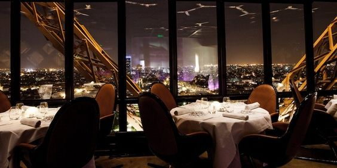
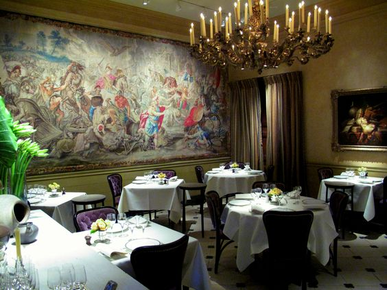
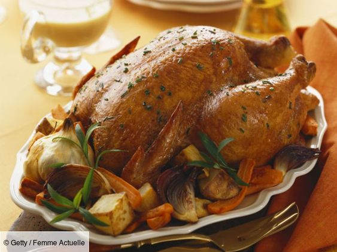
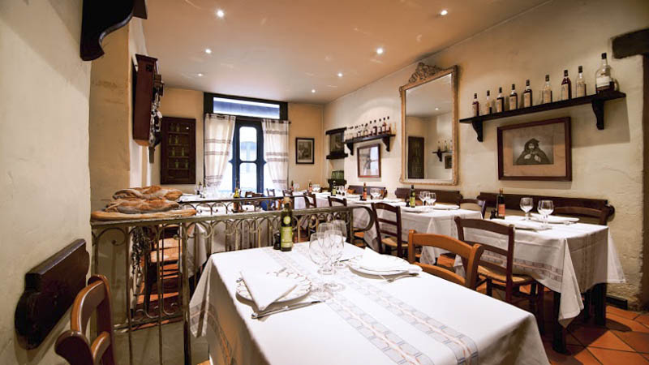
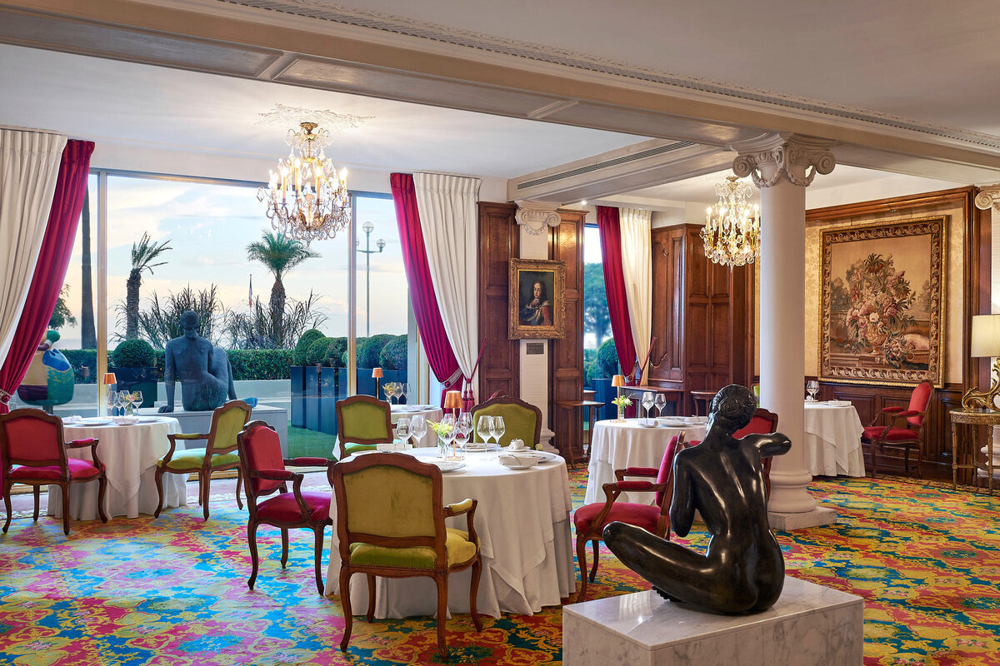
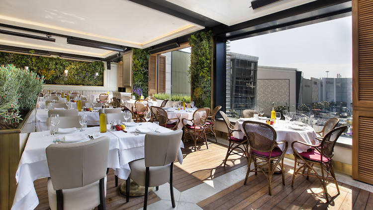
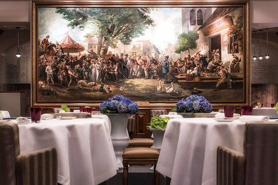
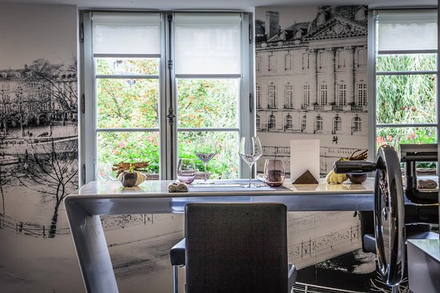
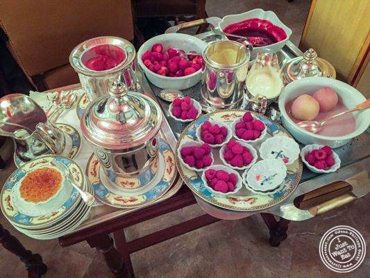
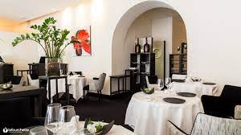

Let's Travel The World!
Paris
Le Jules Verne: Ce restaurant étoilé au guide Michelin est situé sur la Tour Eiffel et offre une vue imprenable sur la ville ainsi qu’une cuisine française gastronomique.

L’Ambroisie: Un autre restaurant étoilé au guide Michelin, L’Ambroisie est connu pour son expérience gastronomique exceptionnelle et est situé sur l’île Saint-Louis.

Bordeaux
Le Chapon Fin: L’un des restaurants les plus anciens et les plus célèbres de Bordeaux, Le Chapon Fin est connu pour sa cuisine française classique et son ambiance historique.

La Tupina: Ce charmant bistrot bordelais est connu pour sa cuisine traditionnelle gasconne et est populaire auprès des habitants et des visiteurs.

Nice
Le Chantecler: Situé dans le célèbre hôtel Negresco, Le Chantecler est un restaurant étoilé au guide Michelin proposant une cuisine gastronomique française et méditerranéenne.

La Petite Maison: Restaurant réputé à Nice, La Petite Maison est spécialisé dans la cuisine méditerranéenne et niçoise, avec un accent particulier sur les fruits de mer frais.

Strasbourg
Au Crocodile: Avec une histoire remontant au 18ème siècle, Au Crocodile est un restaurant étoilé au guide Michelin proposant une cuisine classique alsacienne et française.

Le 1741: Ce restaurant contemporain de Strasbourg est connu pour sa cuisine alsacienne moderne et son ambiance chaleureuse.

Lyon
L’Auberge du Pont de Collonges de Paul Bocuse: Fondé par le légendaire chef Paul Bocuse, ce restaurant est l’un des plus réputés de Lyon et propose une cuisine traditionnelle française.

Le Gourmet de Sèze: Connu pour sa cuisine française inventive, Le Gourmet de Sèze est un restaurant réputé à Lyon.
